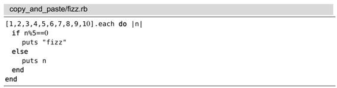
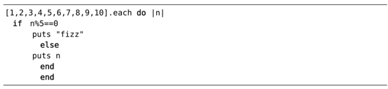

）。这样一来，我们就能安全地使用系统剪贴板进行粘贴操作了，绝无意外情况发生。
）。这样一来，我们就能安全地使用系统剪贴板进行粘贴操作了，绝无意外情况发生。技巧63与系统剪贴板进行交互
除了Vim内置的粘贴命令，我们有时也要用到系统粘贴命令。但当Vim在终端内部运行时，使用该命令经常会产生意外的结果。为了避免这些问题，可在执行系统粘贴命令之前激活‘paste’选项。
准备工作
本节所介绍的技巧只适用于在终端内运行Vim的情况，如果你总是使用GVim，就可以跳过这一部分。首先，要在终端内部启动Vim程序：
➾$ vim -u NONE -N
然后，激活“autoindent（自动缩进）”选项，这样一来，当我们再次把系统剪贴板的文本粘贴出来时，必然会引起奇怪的后果：
➾:set autoindent
最后，需要把下面这段代码复制到系统剪贴板中。众所周知，从PDF中复制代码可能会产生奇怪的结果，因此，我建议大家下载本书的示例代码，并在其他文本编辑器（或网页浏览器）中打开，然后再执行系统复制命令。

了解你所用系统的粘贴命令
在本节中，我们一直提及系统粘贴命令。因此，你可以根据自己系统的情况，将其替换成适当的映射项，在OS X中，Cmd-v映射会触发系统粘贴命令。因此，我们可以在终端或者MacVim中使用这个映射项，用于插入系统剪贴板的内容。
对于Linux与 Windows操作系统来讲，情况则有些复杂，因为Ctrl-v通常是系统粘贴命令的标准映射项。在普通模式下，该映射项将激活Visual-Block模式（参见技巧21），而在插入模式下，它允许我们插入字符本身或字符编码（参见技巧17）。
一些Linux平台的终端仿真环境提供了一种改进的Ctrl-v版本用于从系统剪贴板中粘贴文本。也许是Ctrl-Shift-v，或者是Ctrl-Alt-v，依系统而定。不必担心搞不懂哪个系统粘贴命令最适合于你，因为本节将在最后展示一套使用 "* 寄存器的备选方案。
在插入模式下使用系统粘贴命令
如果我们先切换到插入模式，再使用系统粘贴命令，将会得到以下这样的奇怪结果：

缩进似乎出现了问题。当我们在插入模式下使用系统粘贴命令时，Vim就像我们用手敲键盘一样地输入字符。一旦'autoindent'选项被启用，意味着每当我们创建新行时Vim都会保持同级缩进。剪贴板中每行起始的空格是在之前自动缩进的基础上累加出来的，这样一来，将导致一行比一行往右偏。
GVim能够捕获系统剪贴板粘贴文本的事件，从而可以相应地调整行为。但是，当Vim在终端运行时，这些信息无法获取。'paste'选项允许我们手动通知Vim“要使用系统粘贴命令了”。当'paste'选项被启用后，Vim将禁用所有插入模式下的映射项与缩写，并重置很多选项，其中就包括'autoindent'（有关的完整列表，请查阅:h 'paste'）。这样一来，我们就能安全地使用系统剪贴板进行粘贴操作了，绝无意外情况发生。
当使用完系统粘贴命令之后，我们还要再次关闭'paste'选项。这意味着先切换回普通模式，再运行Ex命令:set paste!。如果有一种方法，不用离开插入模式就可以切换这个选项，是不是很方便呢？
当'paste'选项被启用后，在Vim插入模式下创建自定义映射项的方法都失效了。作为替代方案，我们可以把'pastetoggle'选项（参见:h 'pastetoggle'）映射成一个功能键。
➾:set pastetoggle=<f5>
请试着在命令行窗口中执行以上命令，用 <f5> 来切换'paste'选项。该命令在插入模式或普通模式下都能用。如果你觉得该映射项有用，请把这行（或稍加变化的）命令拷贝到自己的vimrc文件。
为避免切换'paste'选项，请使用加号寄存器进行粘贴
如果你运行的Vim是已集成系统剪贴板的版本，就可以完全避免与'paste'选项打交道了。普通模式下的 "+p 命令用来粘贴加号寄存器中的内容，即系统剪贴板的镜像。更多细节，请参见系统剪贴板（"+）与选择专用寄存器（"*）。无论'paste'与'autocommand'选项激活与否，该命令都能保证位于剪贴板中的文本缩进不会乱套。
(1)这些术语只是名称与之前的术语有所不同，但是意思基本一致，因此，中文版还沿用通用的术语，即删除、复制与粘贴。——译者注